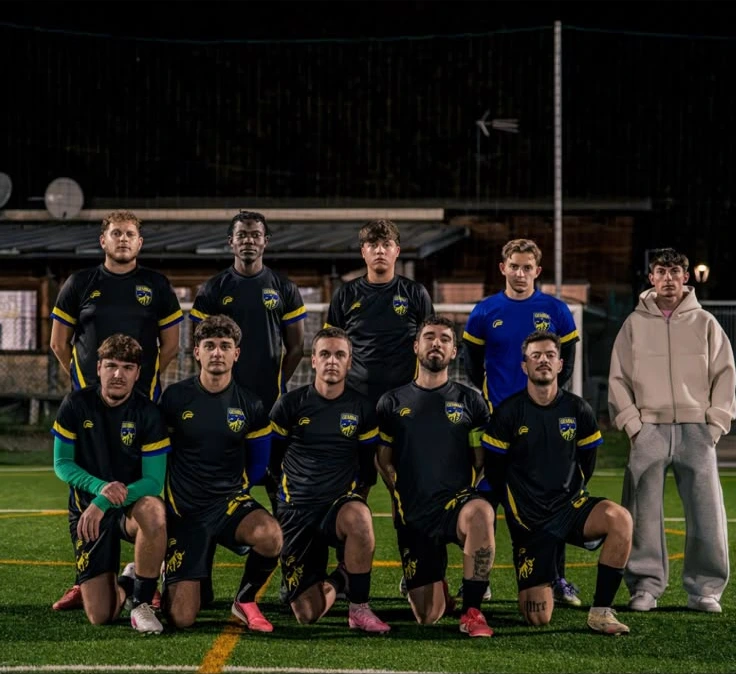
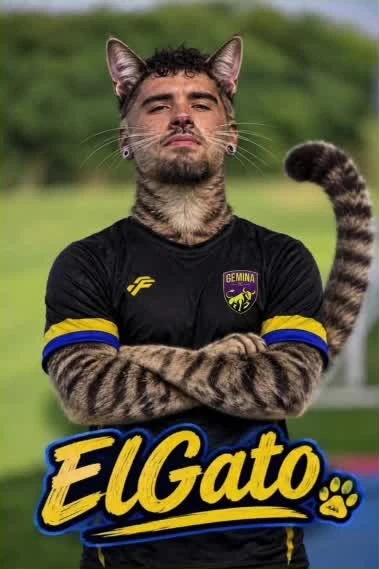
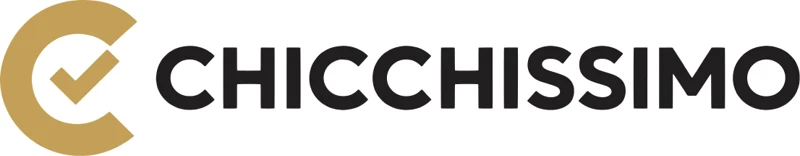
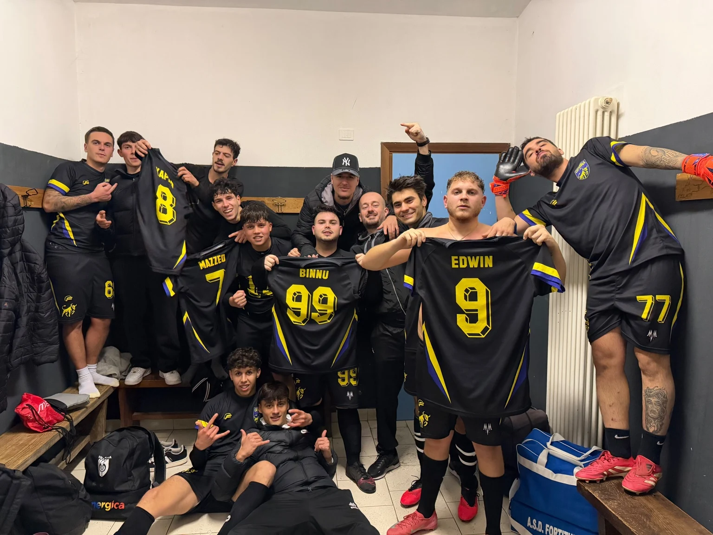

AMACUP CASALE STAGIONE 2026/2027
GEMINA FC
Una squadra amatoriale di calcio a 8, nata al campetto e oggi in campo nell’Amacup.
AMACUP · CALCIO A 8
Prossima partita
Data e avversario da confermare.
IL CLUB
Dal campetto
all’Amacup
Siamo un gruppo di amici che condivide la passione per il calcio. Tutto è cominciato al campetto, tra partite improvvisate e la voglia di mettere in piedi una squadra tutta nostra.
- Le originiUn gruppo di amici e un campetto.
- 2025/26L’esordio in Serie B e il percorso in Champions Cup.
- 2026/27Una nuova stagione in Amacup con l’obiettivo di salire in Serie A.

IL CAPITANO
ELGATO
Quando la squadra è in difficoltà, il nostro capitano si improvvisa portiere. Si mette tra i pali e tira fuori parate miracolose. È così che si è guadagnato il soprannome ELGATO.
Con lui in porta, la partita è salva.
AREA TIFOSI
Il migliore
in campo
PARTNER
I nostri sponsor



Unisciti a noi
Vuoi giocare con la Gemina o proporci una collaborazione?
Scrivici su Instagram a @gemina_fc.